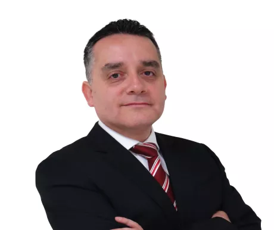
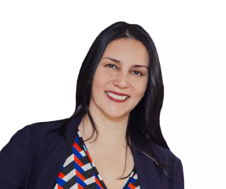
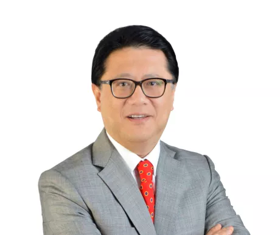

Contactanos
Elige el formato de tu interes
Fecha de Inicio: 18 de junio
Horario: Martes y jueves de 6:30 p.m a 10:30 p.m
Duración: 22 meses aproximadamente
Duración: 25 cuotas de S/.900
Contacto: Fiorella Leonardi al 905 448 000, 924 361 407
Fecha de Inicio: 18 de junio
Horario: Martes y jueves de 6:30 p.m a 10:30 p.m
Duración: 22 meses aproximadamente
Duración: 25 cuotas de S/.740
Contacto: Fiorella Leonardi al 905 448 000, 924 361 407
Fecha de Inicio: 13 mayo
Horario: Online
Duración: 18 meses aproximadamente
Inversión: 20 cuotas de S/.845
Contacto: Fiorella Leonardi al 905 448 000, 924 361 407
Siempre Conectados
Alex Morán Navia
Graduado de la Maestría en EPGUTP, Chief Marketing Officer LATAM de GuruSoft Ecuador
y especialista en Marketing de Contenidos y Branding Design. Le gusta leer y el diseño gráfico.

Diseñar e Implementar Estrategias de Marketing
El mercado actual propone nuevos retos para los profesionales de Marketing. Las recetas
tradicionales
ya no tienen el mismo impacto de años pasados debido a la explosión de medios digitales, el
desarrollo
de dispositivos móviles y el crecimiento masivo de internet.
Es importante considerar que todos estos factores deben estar integrados en nuestra
planificación
comercial, la cual debe plantearse de acuerdo a las necesidades del consumidor de hoy. Por ello,
todos
los esfuerzos de las marcas deben apuntar a la diferenciación y a la generación de valor, factores
que
les permitirán mantenerse vigentes en el tiempo.
En este contexto, el objetivo de la Maestría es desarrollar las competencias necesarias para diseñar
e implementar
estrategias de marketing en un entorno cambiante, que se caracteriza por un mayor poder del
consumidor.
Este programa se orienta a la planificación comercial en un mundo digital y dinámico, donde la
generación de valor
al cliente se ha convertido en un factor determinante para el engagement con las marcas. Además,
esta maestría busca
formar especialistas en marketing altamente preparados para la planificación de actividades
enfocadas a la satisfacción
del cliente, la gestión eficiente de recursos, la gestión estratégica de la distribución y el diseño
de estrategias de
comunicación 360°.
Nuestra Maestría en Marketing y Gestión Comercial está acreditado por ACBSP, una Acreditación
Internacional de Estados
Unidos que garantiza la calidad académica de nuestra Escuela, además, destaca y promueve la mejora
continua de los procesos.
Asimismo reconoce la excelencia en la enseñanza de nuestra maestría así como en los programas de
negocios en todo el mundo.
Beneficios
-
4 Certificaciones
- Maestro en Marketing y Gestión Comercial, otorgado por la Universidad Tecnológica del Perú.
- Máster en Marketing Digital y Transformación Empresarial, otorgado por la EUSCHOOL, España*.
- Misión Académica Internacional con la Universidad Konrad Lorenz, Colombia*.
- Certificado en Biomimicry en alianza con Origgen.
*Las certificaciones en la EUSCHOOL (España) y Konrad Lorenz (Colombia), son opcionales y no están incluidas en la inversión de la maestría. -
Acreditación ACBSP
Nuestra Maestría en Marketing y Gestión Comercial está acreditado por ACBSP, una Acreditación Internacional de Estados Unidos que garantiza la calidad académica de nuestra Escuela, además, destaca y promueve la mejora continua de los procesos. Asimismo reconoce la excelencia en la enseñanza de nuestra maestría así como en los programas de negocios en todo el mundo.
-
Misión Académica Internacional (Opcional)* con la Universidad KONRAD LORENZ de Colombia.
Quienes participen de esta Misión podrán especializarse con la Experiencia de Inmersión Internacional en el Comportamiento del Consumidor a nombre de Konrad Lorenz - Colombia.
*La Misión Internacional es opcional y no está incluida en la inversión de la Maestría en Marketing y Gestión Comercial. -
Máster Internacional (Opcional)* con la European School of Leadership (EUSCHOOL) de España
Quienes participen en este Máster podrán especializarse en Marketing Digital y Transformación Empresarial a nombre de EUSCHOOL - España.
*El Máster es opcional y no está incluido en la inversión de la Maestría en Marketing y Gestión Comercial. -
Estrategias Enfocadas en el Consumidor
El programa desarrolla las competencias necesarias para la planificación e implementación de estrategias
comerciales orientadas a la generación de valor, experiencias inolvidables y el engagement de los consumidores. -
Conocimiento Profundo del Mercado
La Maestría forma profesionales que lideran iniciativas enfocadas en la diferenciación sobre sus competidores, a través de un diagnóstico de la situación
interna y la información obtenida de investigaciones de mercado, insights y conducta del consumidor. -
Capacidad Analítica y Deductiva
La Maestría se enfoca en preparar al participante para la toma de decisiones estratégicas a través de la gestión de datos, el cuestionamiento
de los modelos de negocio y el análisis intensivo de indicadores que garanticen el cumplimiento de objetivos y metas. -
Comunicación 360°
El egresado estará en capacidad de generar oportunidades de mercado a través del uso de dispositivos móviles y redes sociales, las
cuales se han convertido en herramientas clave para los procesos relacionados con la experiencia del cliente. -
Neurociencia Aplicada al Marketing
Nuestra Escuela de Postgrado ofrece a los participantes de esta Maestría experiencia en el uso y herramientas de Neuromarketing.
-
Evaluación de Competencias
En la EPG nos aseguramos de que nuestros estudiantes logren las competencias generales y específicas ofrecidas en cada programa de maestría.
Por ello, todos los estudiantes participan en una medición de competencias, en dos oportunidades, durante sus estudios. Cada estudiante recibe
un informe personalizado con sus resultados, los que permiten identificar oportunidades de mejora. Esta información nos permite seguir mejorando
nuestros procesos formativos, ya que estamos comprometidos con la mejora continua.
Docentes
-
Alessio Sibille
Máster en Administración de Empresas, U. Politécnica de Madrid (España). Máster en Dirección de Marketing y Gestión Comercial, EOI, (España). Facilitador de la Transformación Digital a través de Business Intelligence & Analytics, apalancado en plataformas Cloud y Metodologías Ágiles. Es Gerente Regional de Tecnologías de la Información en QSI. Ha sido Gerente Corporativo Tecnología de BI en Belcorp.
-
Carlos Dulanto

Maestría en Psicología Organizacional, USMP. Especialización en Biomimicry for Creative Innovation, Specialist Circular Economy, University of California (Berkley). CEO de Gen Quijote: Business, Strategy & Innovation en Perú, México y España, Publicista y Consultor en Innovación Estratégica y Conferencista Internacional para Roastbrief & La Cocina Mx. Ha sido Head of Planning en Ogilvy & Mather.
-
Catherine Prevost
MBA, UPC, Master en Gerencia y Administración, EOI (España), Coach Ejecutivo y de Equipos por INCAE Business School (Costa Rica). Es Gerente de División de Productos en el BanBif.
-
Daniel Onchi
Magister en Supply Chain Management, ESAN. Ingeniero Zootecnista, UNALM (España). Genética Aviar-JICA (Japón). Especialista en Operaciones y Logística Marítima-Escola Europea Intermodal Transport (Italia). Director de la Maestría en Gerencia de Operaciones y Logística, UTP. Asesor Gestión Empresas, Operaciones y SCM.
-
David Bravo
Máster en Docencia Universitaria y Gestión Educativa, UTP. Bachiller en Ingeniería de Sistemas y Computación, Universidad Peruana Los Andes. Técnico en Marketing, Universidad del Pacífico. Docente en la EPGUTP y en CERTUS. Agente Inmobiliario Registrado. Ha trabajado en Unilever como Gerente de Marca y Gerente de Ventas, en Nabisco Perú como Gerente de Ventas Lima, en Donofrio como Gerente de Ventas Perú y en Bella Holandesa del Perú como Gerente de Ventas Perú.
-
David Franco
MBA Internacional, EPGUTP y UEMC (España). Certificado en Metodología Lego® Serious Play®. Máster en Marketing, UPC y EOI (España). Director Académico de la Escuela de Postgrado UTP. Ha sido Jefe de Marketing en Real Club de Lima, Jefe de Producto en Banco Cencosud, Jefe Académico en EPG UTP y Jefe de Marketing en Grupo Deltron.
-
Federico Vargas

Maestro en Banca de Finanzas, IEB en la U. Complutense de Madrid (España) .Certificado en Scrum Master (SMC™). Es CEO-Director en el Grupo Empresarial 360, Centro América y el Caribe y Director of the Board Global Accreditation Center, PMI®. Empresario y Gerente de Negocios con más de 19 años de experiencia Gerenciando Organizaciones y Proyectos en todo tipo de industrias, tales como Ingeniería, Telecomunicaciones, Tecnologías de Información, Financiero, Desarrollo Social y Consultoría.
-
Felipe Vanini
Magister Administración, ESAN. PDD, PAD. Ingeniero Industrial, UNT. Gerente General ARAMEUS consultora estratégica en crecimiento. Fue Gerente General Deprodeca (Gloria), Corp. Custer (Consumo Masivo) y Layconsa. Gerente Unidad Negocio/Marketing Supermercados Peruanos, Axur, TQC y otros.
-
Herbert Bravo

Magister en Marketing de Servicios, USMP. Consultor en marketing, estrategia de comunicación e imagen corporativa e institucional, Gestor y analista temático de proyectos campañas de RSC y BTL en instituciones públicas y privadas.
-
Janice Ortiz

no info.
-
Javier Benitez

MBA, IE (España). Licenciado en CCEE y EE. Licenciado en Derecho. Coach y Autor de 4 libros. Director de BNI. CEO Se Feliz Coaching. Socio Director Gamelearn. Director Embajadores de la Felicidad. Docente de habilidades directivas.
-
Javier Sosa

MBA, PAD. Ejecutivo senior con experiencia en dirección comercial e investigación de mercados. Conocimiento del canal tradicional y moderno. Actualmente es Gerente Comercial de Zoomin Group Peru y anteriormente en cargos similares en empresas de investigación y retail.
-
José Campos

Máster, IESE (ESPAÑA). PAD Ingeniero Industrial colegiado U. Lima. Docente investigador EPGUTP. Gerente General VILLADEDOOD. Gerente Banca Empresa y Corporativa BBVA.
-
José Carlos Yamagoshi
Doctorando en Educación, MBA PAD, Máster Digital Business Management, UB (España). Educador, Experto en la gestión estratégica de modelos de negocios centrados en la persona, CX, UX y CRM. Socio de Interaction, presidente de la Asociación Peruana de CRM.
-
José Lecaros

MBA, UTP. Administrador de Empresas, PUJC (Colombia). Gerente General y Dueño JELL STRATEGIC ALIGNMENT. Coordinador de Negocios para América Latina ZAMBON Colombia. Miembro del American Marketing Association (AMA - USA)
-
Julian Laski
Ph D en Business Administration, ULB (Bélgica). Contador Público, UBA (Argentina). Estudios de maestría en gestión pública, UOC (España). Es consultor de organismos internacionales desde hace más de 20 años. Es profesor de programas de maestría y doctorado en varias universidades de América Latina.
-
Liliana Alvarado

Doctora en Administración y Dirección de Empresas, U. Politécnica de Cataluña. MBA, Esan. Actualmente es Vicerrectora Académica de la UTP, Directora General de la Escuela de Postgrado de la UTP, Autora del libro "Brainketing", Presidenta del Instituto de Transformación Digital CC-UNI y Local Chair de la Neuromarketing Science & Business Association.
-
Luis Enrique Zevallos

MBA, UTP. Licenciado en Ciencias Militares con mención en Ingeniería Mecánica, Administrador de Empresas, Gerente General de Business & Sales Training, Gerente Comercial de FR MEDICAL.Docente, Consultor y Mentor.
-
Luis Merino

Doctorando UPC (España). MBA, ESAN. Ingeniero Metalurgista, UNSA. Director de Selstrat, consultora de negocios. Ha sido Gerente General de Colegios Proeduca S.A.
-
Marlith Segura

Magíster en Gestión, Acreditación y Autoevaluación Educativa, USMP. Es subdirector de Calidad Educativa en la ENSABAP. Ha sido coordinador de formación docente en la UPCH para programas de UNESCO y MINEDU
-
Martin Maltese

MBA en Estrategias, CENTRUM PUCP, consultor y líder comercial con más de 25 años de experiencia en el desarrollo de nuevos negocios y diseño e implementación de estrategias comerciales en empresas nacionales y trasnacionales. Docente y mentor en Escuelas de Negocios e Incubadoras.
-
Michael Lázaro

Magíster en Gestión de la Innovación, U. Cayetano Heredia. Jefe de Gestión de Operación de Cadenas en Claro Perú. Mentor en Estrategia e Innovación de Negocios para Emprendedores y Empresarios. Ha sido Product Owner de Estrategia de Canales Digitales en Interbank.
-
Nancy Escribens

Egresada del Doctorado en Administración de Negocios Globales, URP, Licenciada en Administración de Empresas, U. Lima. Maestra en Marketing y Gestión Comercial, UTP, Master Facilitator por la International Facility Community (IFC). Gerente Comercial de Alfosac. Country Manager de Retail Marketing Perú. Ha sido Directora Comercial de Transel Operador Logístico.
-
Oscar Carbajal
Master en Gestión de Empresas de Comunicación, Universidad de Navarra (España). MBA, UPC. CEO de Compulso. Ha sido Gerente Nacional de Ventas en el Grupo El Comercio. Ha sido Comercial Partnerships Director en FOX Latin American Channels.
-
Pedro Kanashiro

Magister en Docencia Universitaria y Gestión Educativa, UTP. Especializado en el diseño y ejecución de cursos relacionados a habilidades blandas. Actualmente es Director de Cuatro & Compañía, empresa dedicada a la transformación de personas a través de actividades artísticas y lúdicas
-
Pilar Tabja
no info.
-
Sergio Madero
no info.
Admision
- Grado Académico de Bachiller (Registrado en SUNEDU)
- Experiencia Laboral relevante, mínimo 2 años.
- Evaluación de las Aptitudes de los Postulantes mediante.
- Entrevista Personal.
- Evaluación de Conocimientos
- Carta de Presentación explicando la Motivación de Estudio en el Programa.